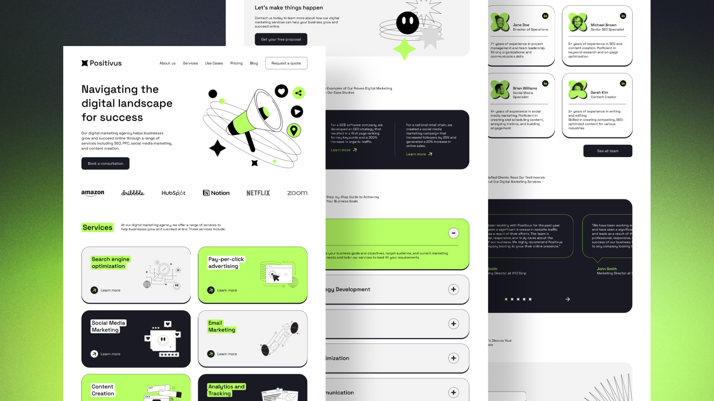

Content & AI Content
Social posts, content systems, AI-assisted content and prompt engineering built around the audience and goal.
Content • Prompts • StrategyDIGITAL MARKETING • AI • WEB • GROWTH
I’m Merban Ali. I combine digital marketing, SEO, content, sales experience, creative production and emerging AI tools to build practical digital growth systems.

01 / ABOUT
I work across the marketing journey: understanding an audience, shaping a message, creating content, improving search visibility, planning campaigns and turning repetitive work into smarter workflows.
My background in sales promotion and retail auditing gives me field-level experience with customers, outlets, visibility, compliance and competitor activity. I’m now extending that foundation into digital marketing, Generative AI, automation, WordPress and web development.
02 / SERVICES
Social posts, content systems, AI-assisted content and prompt engineering built around the audience and goal.
Content • Prompts • StrategyOn-page and off-page SEO, keyword research, social media and practical digital growth planning.
SEO • SMM • StrategyWorkflow ideas and implementation using Generative AI, n8n, Zapier and API integrations to reduce repetitive work.
n8n • Zapier • APIsCampaign planning, creative direction and optimization concepts for Meta Ads and Google Ads.
Meta Ads • Google AdsMarketing visuals, social creatives, motion graphics and video editing for clear, platform-ready communication.
Photoshop • AE • PremiereResponsive WordPress websites, landing pages and front-end portfolio builds with attention to structure and usability.
WordPress • HTML • CSSRetail-focused execution, outlet auditing, visibility checks, competitor insights and sales promotion strategy.
Retail • Auditing • SalesUsing Generative AI for research, ideation, content workflows and smarter marketing decisions.
Generative AI • Research03 / SELECTED WORK
A mix of social content, SEO, SaaS growth, retail marketing, creative production and web work. Each project shows the role, tools and type of work involved.
SOCIAL MEDIA • CONTENT
Social content support including post concepts, visual creatives and content planning for consistent communication.
CONTENT • SOCIAL
Marketing content for study visa communication, combining useful information with clear visual messaging.
SEO • JOBLIFY
On-page SEO work focused on page structure, keyword relevance, metadata and search-friendly content organization.
SALES • RETAIL AUDITING
Perfect Store auditing work across retail outlets covering stock, shelf placement, visibility, compliance and competitor observations.
SALES • FIELD MARKETING
Sales promotion experience in Abbottabad involving product promotion, retail execution and customer-facing market activities.

SAAS / GROWTHSAAS • GROWTH
Growth and marketing support for a live SaaS product built for online poker players, with a focus on content, acquisition, analytics and growth opportunities.
DESIGN • VIDEO • SOCIAL
Posts, reels and visual content developed with a focus on clear messaging, consistent layouts and platform-friendly formats.
WEB DEVELOPMENT • WORDPRESS
Portfolio and website builds focused on responsive layouts, clean page structure, strong visual hierarchy and practical business communication.
04 / TOOLKIT
CURRENTLY LEARNING
AI automation • App development • Python for AI • API integrations • AI-powered marketing workflows • smarter research and content systems
05 / EXPERIENCE
Retail outlet audits, stock and shelf checks, visibility, compliance, competitor insights and company software reporting.
Sales promotion and market-facing work in Abbottabad, with a focus on retail execution and customer engagement.
Developing practical skills across SEO, social media, content, paid ads, design, Generative AI, automation and web development.
06 / CONTACT
Let’s talk about marketing, content, SEO, creative work, automation, WordPress or a digital product.